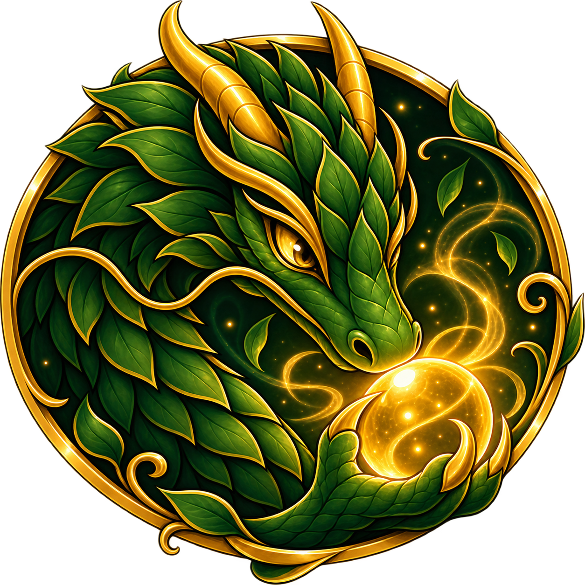
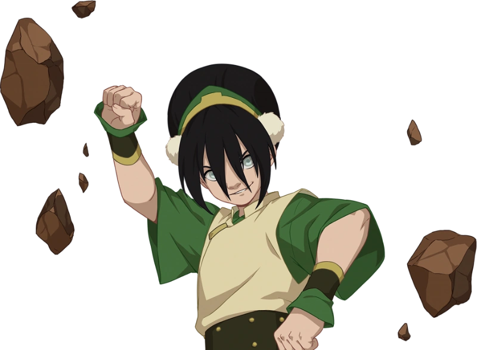

Hidden Garden
Enter the Jasmine Dragon
The garden is ready, but the gate is locked. Enter the password to continue to Jasmine Dragon: Zen Garden.
Behind the Curtain
Something has been growing behind the garden wall.

Hidden Garden
The garden is ready, but the gate is locked. Enter the password to continue to Jasmine Dragon: Zen Garden.
“I am not Toph. I am MELON LORD!”
— Toph
